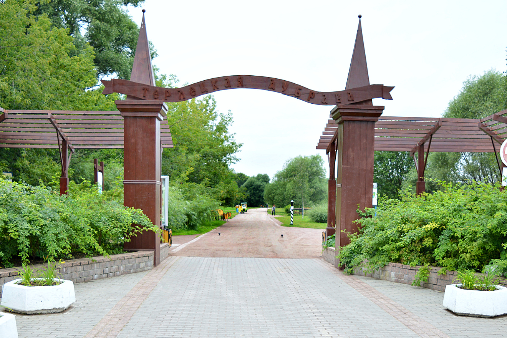

Терлики
Терлецкий парк (Терлецкая дубрава) — лесной массив площадью 141 гектар, расположенный в Восточном административном округе Москвы на территории районов Перово и Ивановское. Его границы определены улицей Металлургов, Напольным проездом, Свободным проспектом и шоссе Энтузиастов. Часть территории лесопарка — памятник садово-паркового искусства XVIII века. В парке расположены Терлецкие пруды. Рядом с парком находится Измайловский парк — особо охраняемая природная территория регионального значения.
Официально парк начал существовать в 1972 году (вместе с началом строительства микрорайона Ивановское). Тогда Терлецкую дубраву выделили из Измайловского парка. Название хранит память о генерале Александре Торлецком, приобретшем и обустраивавшем эту местность (тогда подмосковную) в начале XX века. Часть аллеи (ближе к спасательной станции), которая идёт от Свободного проспекта, раньше была Владимирским трактом. В 1977—1978 годах часть парка, являющаяся памятником садово-паркового искусства XVIII века, была реконструирована.
В 2009 году в парке были установлены две скульптуры работы Салавата Щербакова, изображающие ямщика и военного инструктора с собакой. Памятники напоминают об истории парка: на его территории сохранился фрагмент Владимирского тракта — главной старинной дороги, связывающей Москву с Владимиром, а раньше работала школа служебного собаководства Красной Армии.
Вики- Памятник солдату и собаке
- Памятник ямщику